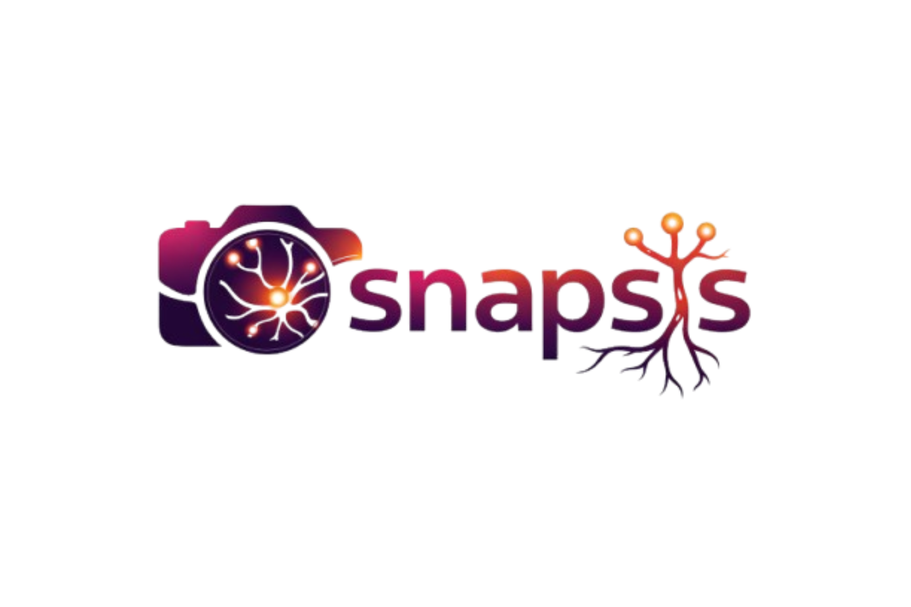
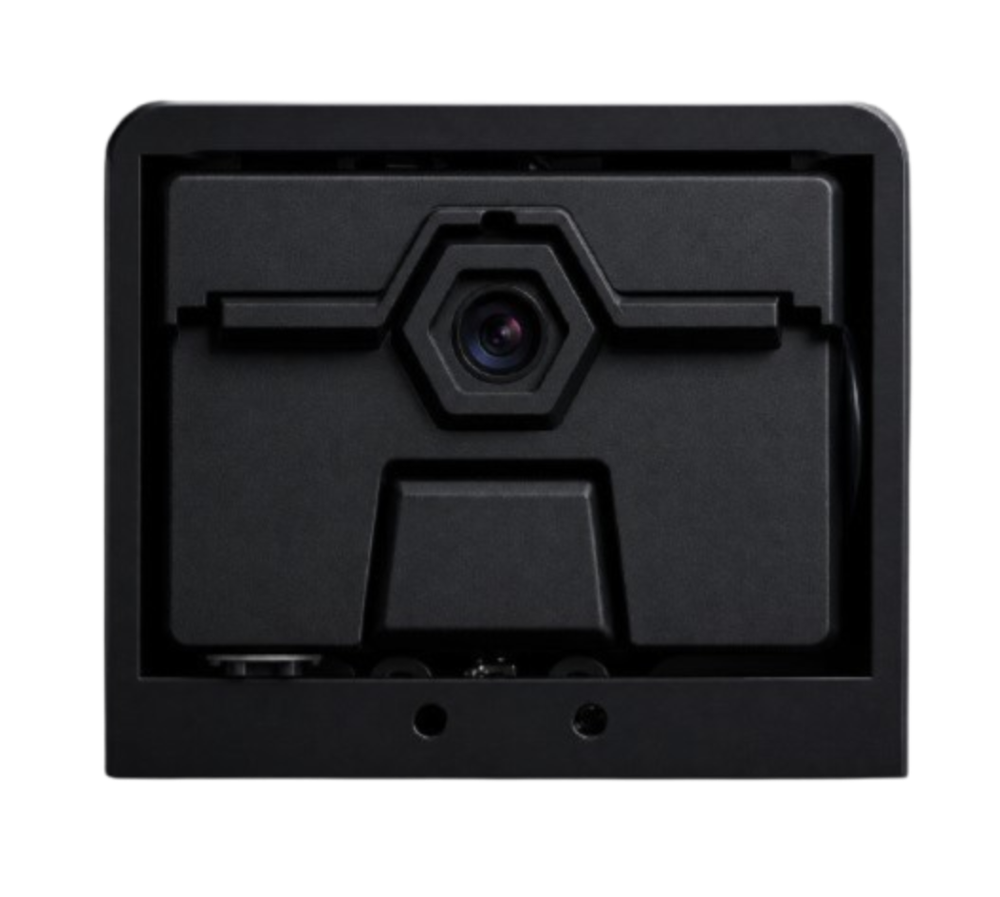
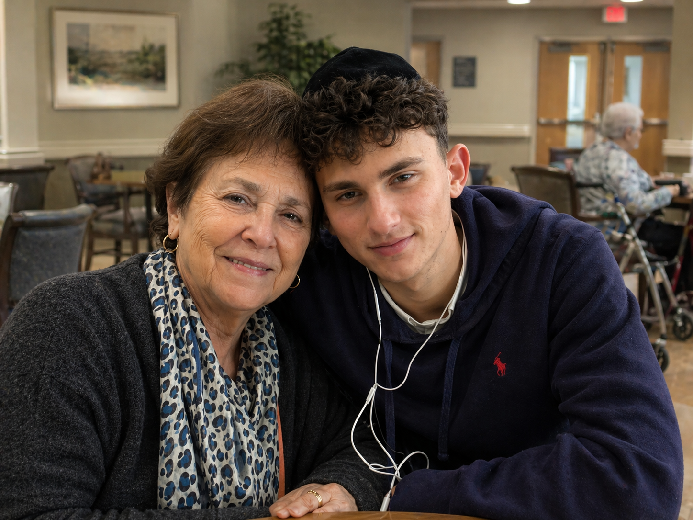
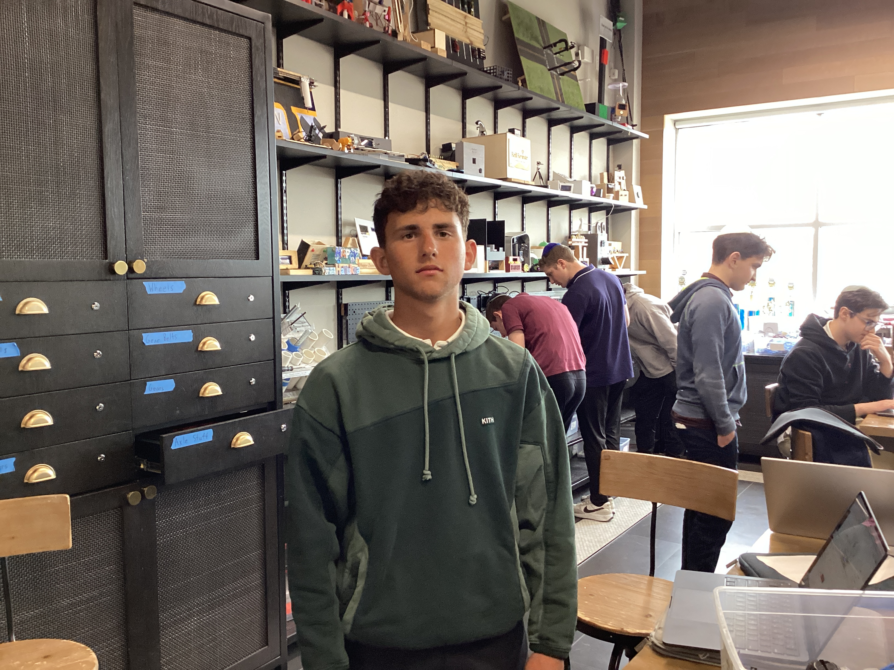
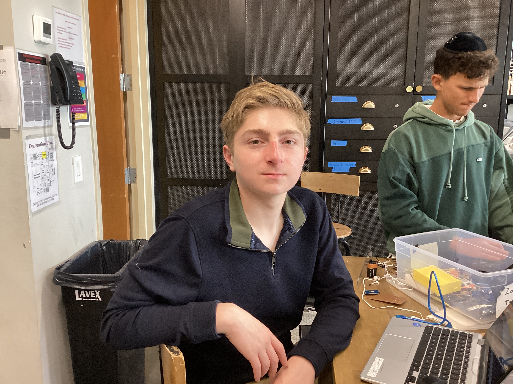
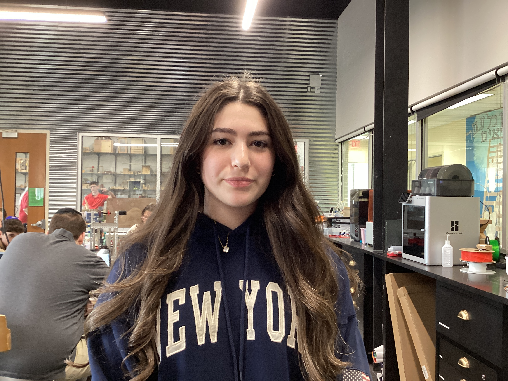

A smart device that quietly reminds dementia patients who their loved ones are.
See How It Works
I used to walk up to my grandmother, ready to tell her about my day… and all I would see is confusion. Not complete confusion—just that small pause. The look where you can tell she's trying to place you, but can't quite get there. So I'd say my name again. And then again. It became something I expected, even though it never really got easier-introducing myself to someone who used to know me better than anyone. The hardest part was the way she looked at me. Like she wanted to remember. Like it was right there, just out of reach. That feeling stayed with me. I couldn’t just ignore it, so I started working on a way to help—something simple that could make those moments a little easier. That’s where the idea for Snapsis started. I wanted something that could gently fill is the gaps when memory falls short. Something that could turn that moment of hesitation into recognition. Something that could give families back even a small piece of what feels like is slipping away. Because sometimes, it’s not about fixing everything. It’s about holding onto what you still can. And cherishing every moment while it lasts.

The camera detects a loved one walking in front of the patient.
AI identifies the person using facial recognition.
The patient hears a quiet message like "This is your daughter Sarah."
This project was created as a 10th-grade capstone project by Josh Goldman, Liam Lindenbaum, and Sarit Kagan for the elderly worldwide.
Josh Goldman-Circuit Design Specialist

Liam Lindenbaum-Head of Software Development and Assistant in Product Design

Sarit Kagan-Cheif Creative Officer
